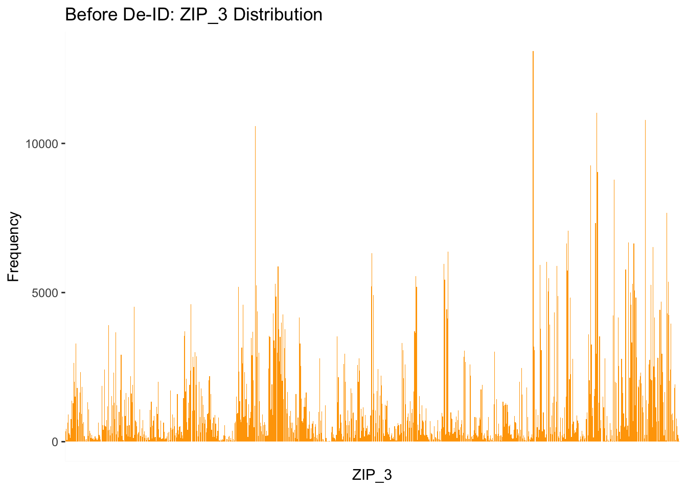
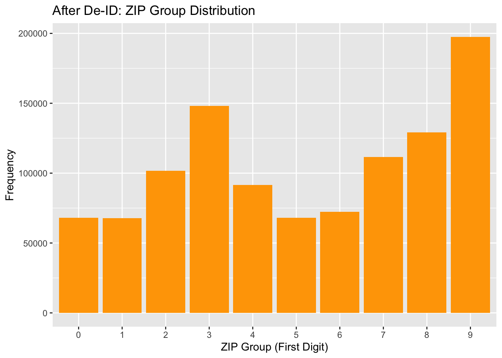

library(dplyr)
Attaching package: 'dplyr'The following objects are masked from 'package:stats':
filter, lagThe following objects are masked from 'package:base':
intersect, setdiff, setequal, unionlibrary(ggplot2)library(dplyr)
Attaching package: 'dplyr'The following objects are masked from 'package:stats':
filter, lagThe following objects are masked from 'package:base':
intersect, setdiff, setequal, unionlibrary(ggplot2)Before analyzing the data, I applied the Data Science Ethics Checklist (Deon) and focused specifically on the relevant aspects for this open data release scenario:
Consent & Justification: Although the dataset uses fake personal information, I considered whether equivalent real data would require informed consent and a clear explanation of the public benefit for data release.
Minimization: Only data strictly necessary to inform public understanding of mortgage performance should be retained. Irrelevant personal attributes must be excluded.
Security Practices: Throughout the analysis, the data must be stored securely with restricted access. Secure deletion practices will be applied to intermediate datasets after use.
Access Control: Ensure that only those working on the project can access any non-de-identified versions of the data.
Bias and Fairness: Although no modeling is performed, publishing the data could lead to biased interpretations. For example, publishing demographic correlations without context might reinforce stereotypes.
Transparency: All steps — from cleaning to de-identification — will be documented in a reproducible Quarto report for transparency.
De-identification: A primary ethical concern is re-identification risk. Steps must be taken to generalize, bin, or suppress variables that could reveal individual identities directly or indirectly.
Documentation: A clear data dictionary and README will accompany the release to ensure responsible reuse and prevent misinterpretation.
library(dplyr)
your_loan_data <- readRDS("data/your_loan_data.rds")
#glimpse(your_loan_data)#colnames(your_loan_data)| Variable | Risk Type | Why It's Risky |
|---|
first_name / last_name |
✅ Direct Identifier | Uniquely identifies individuals. Must be removed. |
names |
✅ Direct Identifier | Likely concatenation of first and last name — high re-ID risk. |
zip_3 |
✅ Indirect Identifier | A 3-digit ZIP is coarse but still reveals location. In combination with age/income, re-ID is possible. |
state |
⚠️ Indirect | Low risk on its own, but can combine with ZIP and other fields. |
income |
✅ Indirect | High/low incomes can be unique within ZIP or state. |
cus_age / age |
✅ Indirect | Highly identifying when combined with zip_3, gender, income. May also appear twice — check for redundancy. |
gender |
⚠️ Indirect | Not identifying alone, but can amplify re-ID risk with other attributes. |
no_depend |
⚠️ Indirect | Number of dependents can be identifying in small subpopulations. |
fthb_flg |
⚠️ Indirect | First-time homebuyer flag — low uniqueness but useful in combinations. |
loan_id |
✅ Direct | Likely a unique loan reference. Should be removed or pseudonymized. |
orig_amt |
⚠️ Quasi-Identifier | Large loan amounts are uncommon and may be identifying. |
msa |
⚠️ Indirect | Metropolitan Statistical Area – geographic indicator, risk increases when paired with others. |
seller, servicer |
❌ Low | Organization-level, not individual. Low re-ID risk unless linked externally. |
loan_age, orig_rt, last_upb, last_rt, etc. |
❌ Low | Financial variables — low risk on their own, but extremes may carry small risk. |
orig_dte, frst_dte, last_activity_date, lpi_dte, etc. |
⚠️ Indirect (Temporal) | Specific timelines may be unique when combined with other fields (e.g., orig_dte + ZIP). |
dti, cscore_b, cscore_c |
⚠️ Indirect | Credit scores and debt ratios can be quasi-identifiers in rare edge cases. |
mod_flag, modtot_cost, net_loss, etc. |
❌ Low | Financial performance data — low risk for direct re-ID, but outliers may warrant suppression. |
Clean empty or sparse data.
Identify columns with mostly NA
# Set threshold (e.g., 80% NAs)
threshold <- 0.8
# Calculate proportion of NAs per column
na_props <- sapply(your_loan_data, function(x) mean(is.na(x)))
# Identify column names with too many NAs
na_columns <- names(na_props[na_props > threshold])
na_columns [1] "fcc_cost" "pp_cost" "ar_cost" "ie_cost" "tax_cost"
[6] "ns_procs" "ce_procs" "rmw_procs" "o_procs" "f30_dte"
[11] "f60_dte" "f90_dte" "f120_dte" "f180_dte" "fce_dte"
[16] "f180_upb" "fce_upb" "f30_upb" "f60_upb" "f90_upb"
[21] "fmod_dte" "fmod_upb" "pfg_cost" "net_loss" "net_sev"
[26] "modtot_cost"Remove
your_loan_data_clean <- your_loan_data %>%
select(-all_of(na_columns))Acquisiton Date
str(your_loan_data$aqsn_dte) chr [1:1055796] "/Use-12-01" "/Use-12-01" "/Use-12-01" "/Use-12-01" ...your_loan_data_clean <- your_loan_data_clean %>%
select(-aqsn_dte)“aqsn_dte was excluded from the dataset because it contained only a single placeholder value (/Use-12-01) across all rows. It did not contribute any meaningful variation or temporal information for analysis.”
sapply(your_loan_data[, c("lpi_dte", "fcc_dte", "disp_dte")], function(x) mean(x == "") * 100) lpi_dte fcc_dte disp_dte
99.93768 99.93777 99.94554 lpi_dte, fcc_dte, disp_dte were removed because over 99% of its values were missing (empty strings). The small number of populated entries posed a re-identification risk without adding substantial analytical value.
your_loan_data_clean <- your_loan_data %>%
select(-lpi_dte, -fcc_dte, -disp_dte)Remove direct identifiers
your_loan_data_clean <- your_loan_data %>%
select(-loan_id, -first_name, -last_name, -names)Convert age into age ranges
your_loan_data_clean <- your_loan_data_clean %>%
mutate(age_group = case_when(
age < 20 ~ "<20",
age >= 20 & age < 30 ~ "20-29",
age >= 30 & age < 40 ~ "30-39",
age >= 40 & age < 50 ~ "40-49",
age >= 50 & age < 60 ~ "50-59",
age >= 60 ~ "60+"
)) %>%
select(-age, -cus_age)head(your_loan_data_clean$age_group)[1] "50-59" "50-59" "20-29" "50-59" "60+" "30-39"Age was binned into ranges (<20, 20–29, ..., 60+) to reduce re-identification risk from rare age values. While this may reduce model precision for fine-grained age effects, it preserves enough demographic utility for group-level analysis of loan characteristics across life stages.
Zip code
your_loan_data_clean <- your_loan_data_clean %>%
mutate(zip_group = substr(as.character(zip_3), 1, 1)) %>%
select(-zip_3)“zip_3 was considered a quasi-identifier due to its ability to narrow down geographic location. To mitigate risk, we retained only the first digit (zip_group), reducing precision from ~800 regions to ~10 broader zones. This preserves geographic utility for broad trend analysis while reducing the risk of re-identification when combined with other variables.”
ggplot(your_loan_data, aes(factor(zip_3))) +
geom_bar(fill="orange") +
labs(title = "Before De-ID: ZIP_3 Distribution", x = "ZIP_3", y = "Frequency") +
theme(axis.text.x = element_blank(), # too many ZIPs to show
axis.ticks.x = element_blank())
ggplot(your_loan_data_clean, aes(factor(zip_group))) +
geom_bar(fill = "orange") +
labs(title = "After De-ID: ZIP Group Distribution", x = "ZIP Group (First Digit)", y = "Frequency")
Income
your_loan_data_clean <- your_loan_data_clean %>%
mutate(income_bracket = case_when(
income < 40000 ~ "<40K",
income >= 40000 & income < 60000 ~ "40-60K",
income >= 60000 & income < 80000 ~ "60-80K",
income >= 80000 ~ "80K+"
)) %>%
select(-income)Convert to year only or remove if too granular:
your_loan_data_clean <- your_loan_data_clean %>%
mutate(orig_year = format(as.Date(orig_dte), "%Y")) %>%
select(-orig_dte, -aqsn_dte, -frst_dte, -last_activity_date,
-lpi_dte, -fcc_dte, -disp_dte, -f30_dte, -f60_dte,
-f90_dte, -f120_dte, -f180_dte, -fce_dte, -fmod_dte)You answer to task 2 should be in self contained files.
Add you citations here
Share you AI acknowledgement and queries here